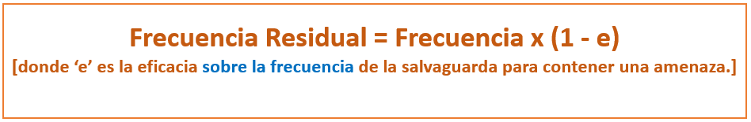

Frecuencia Residual
- Un sistema de salvaguardas absolutamente ineficaz (ef = 0) deja la frecuencia donde estaba, mientras que un sistema de salvaguardas plenamente eficaz (ef = 1) reduce la frecuencia a 0.
- Al igual que para calcular el impacto residual, se suele emplear algunas funciones similares.
